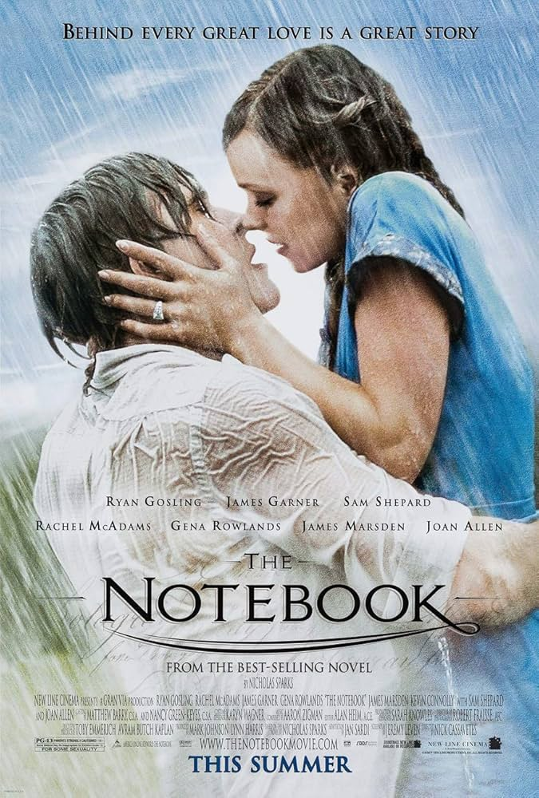
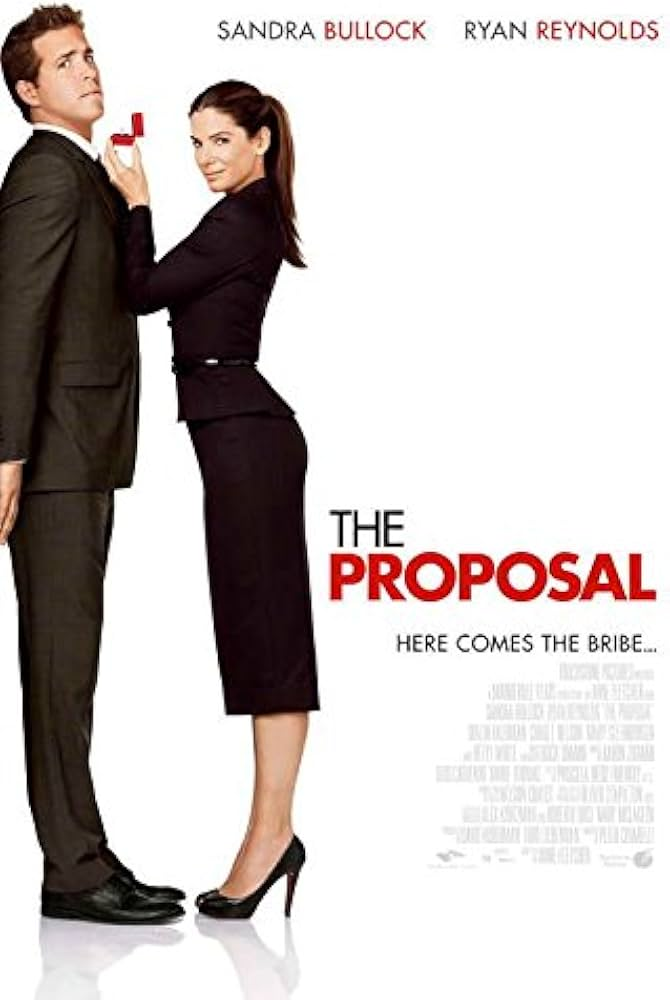
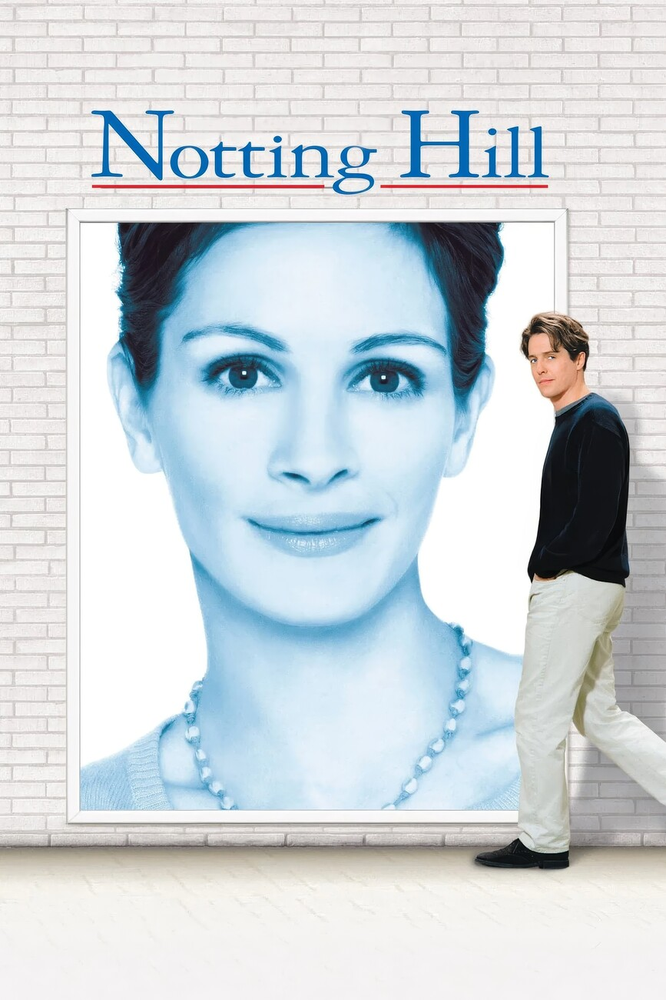
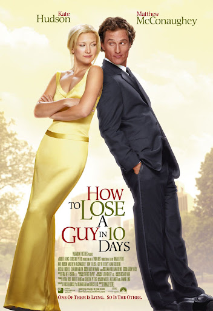
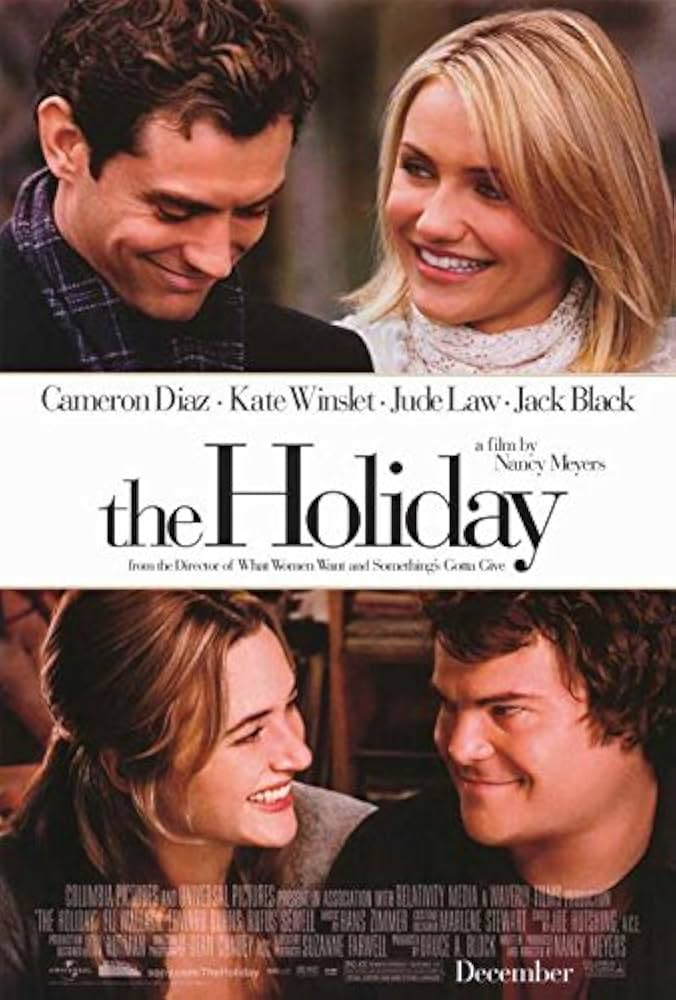

Page 1: Classics
| Movie | Poster | Why I Love It / Why It's Iconic |
|---|---|---|
| The Notebook |  |
The Notebook is the ultimate tragic love story. This movie makes everyone cry and is just such a sweet tale of long-lasting love. |
| The Proposal |  |
Sandra Bullock and Ryan Reynolds are so funny in this movie. The fake engagement plot is jsut a perfect storm to make them fall in love. |
| Notting Hill |  |
This movie has one of MY most quoted lines in rom-com history. "I'm just a girl, standing in front of a boy, asking him to love her." |
| How to Lose a Guy in 10 Days |  |
Kate Hudson and Matthew McConaughey are incredible together and make for the perfect chaotic storyline. |
| The Holiday |  |
My absolute favorite Christmas-time romantic comedy. The switching homes and multiple point of views is amazing. |
| A Walk to Remember | The most tragic and sad love story, though incredibly moving. Always makes me sob. |